101 Cursor AI
Learning to use for Java Enterprise projects
“Two basic rules of life are:
1) Change is inevitable.
2) Everybody resists change.”
- W. Edwards Deming
“Quality comes not from inspection, but from improvement of the production process.”
- W. Edwards Deming
“People have a right to joy in their work.”
- W. Edwards Deming
The father of Total Quality
Edwards William Deming (1900-1993)
Source: https://blog.lifeqisystem.com/william-edwards-demingWho I am
|
|
Juan Antonio Breña Moral Technical Product Owner for Engineering Shared Platform @ Atradius CIO
Twitter | Github | LinkedIn |
|
Quotes: "Lead me, follow me, or get out of my way." "Pressure makes diamonds." - George S. Patton Jr. |
|
Agenda
- Who I am
- Context
- Reviewing the IDE I
- Reviewing the IDE II
- Demo
- Value proposition
- References
- Q&A
Agenda
- Who I am
- Context (5min)
- Reviewing the IDE I (5min)
- Reviewing the IDE II (25min)
- Demo (10min)
- Value proposition (10min)
- References (5min)
- Q&A
Poll
Can you raise your hand ✋, if you have tried Cursor AI?
Poll
Why has Cursor AI become such a hot topic of conversation lately?
Context
Cursor AI became the fastest startup to reach $100M in ARR (Annual Recurring Revenue)
 Source: https://sacra.com/research/cursor-at-100m-arr/
Source: https://sacra.com/research/cursor-at-100m-arr/
ThoughtWorks Radar 2025Q1 // Tools
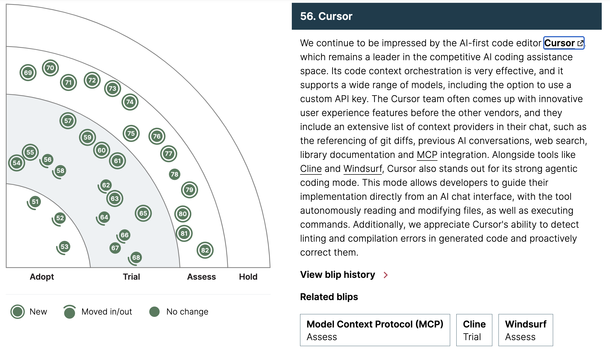 Source: https://www.thoughtworks.com/radar/tools/summary/cursor Source: https://www.infoq.com/articles/ai-trends-disrupting-software-teams/
Source: https://www.infoq.com/articles/ai-trends-disrupting-software-teams/
Reviewing the IDE I
Cursor version used for the talk:
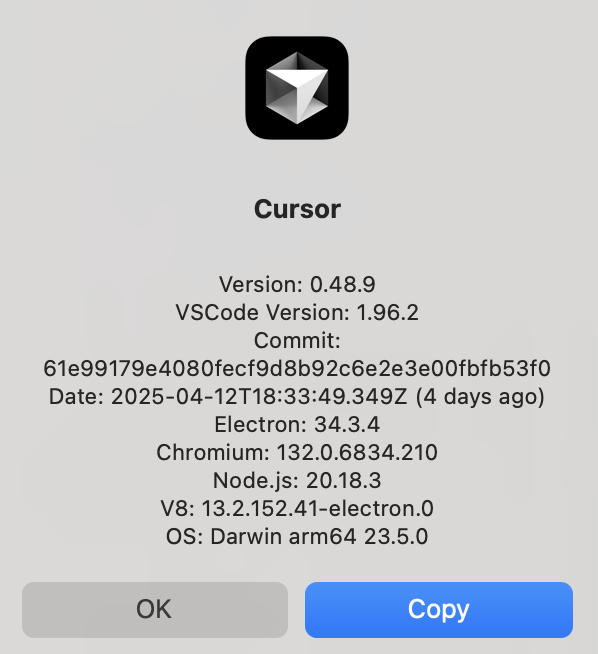Reviewing the IDE I
General idea about Cursor:
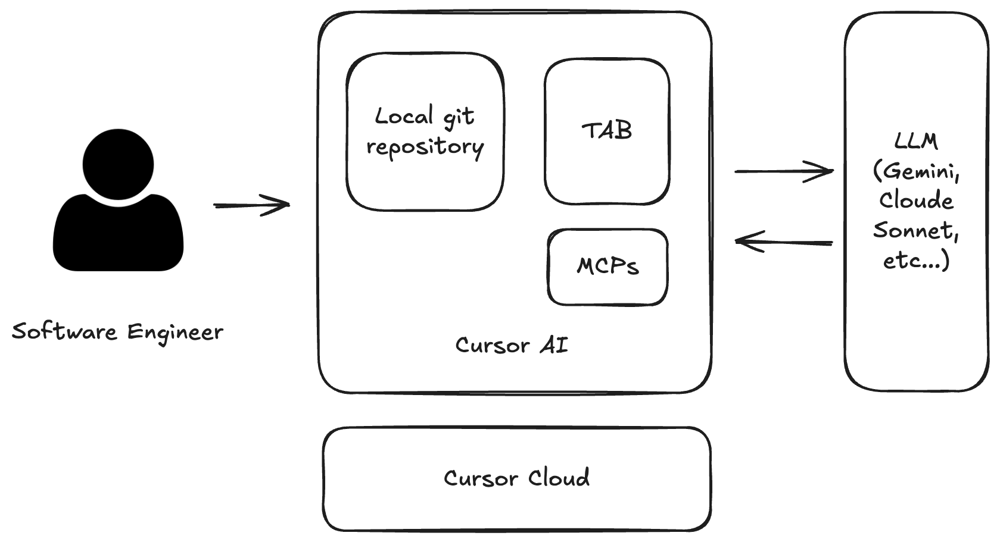Reviewing the IDE I
- Security features
- Enterprise features
Reviewing the IDE I
- Security features
- Privacy mode
- Trust
Privacy mode
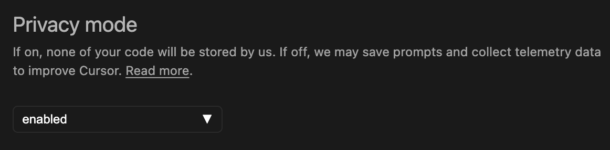Note: with Pro account, the developer needs to disable.
Source: https://www.cursor.com/privacyTrust
Cursor operates a continuously monitored and 3rd-party audited security program.
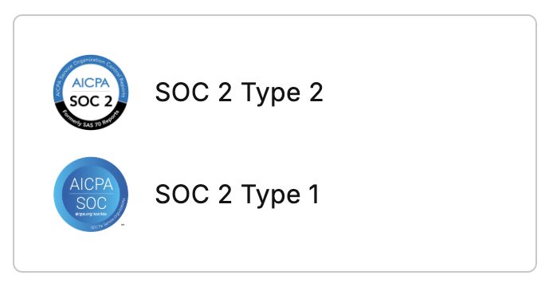
Source: https://trust.cursor.com/Trust
SOC 2 is a compliance framework used to evaluate and validate an organizations information security practices.
Source: https://trust.cursor.com/Reviewing the IDE I
- Enterprise features
- Business account
- Budget management
- Team management
- Team metrics
Business account
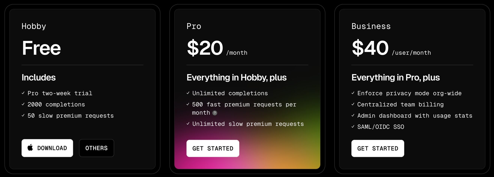
- Enforce privacy mode org-wide
- SAML/OIDC SSO
Budget management
Set a monthly budget for the team:
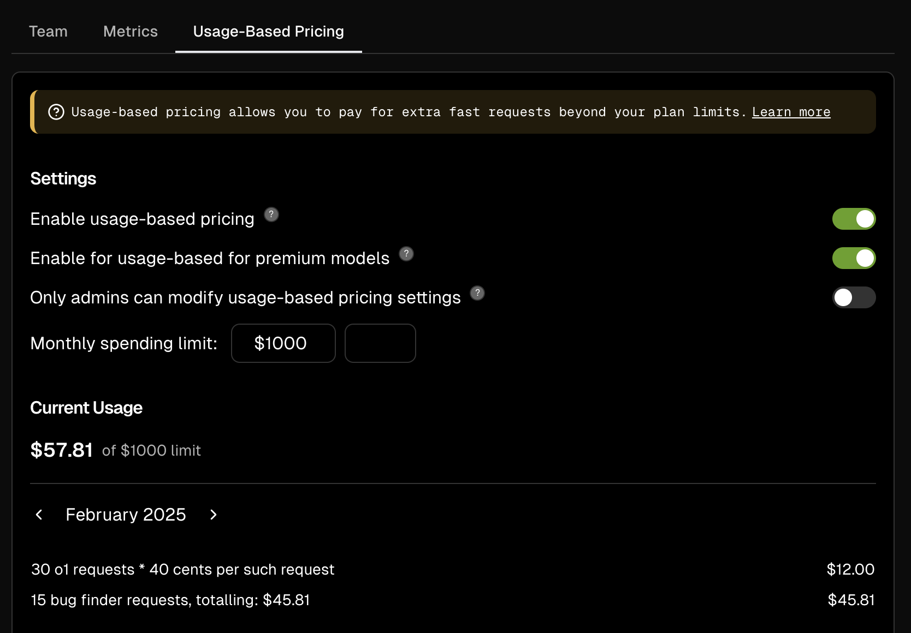Team management
Set up your team:
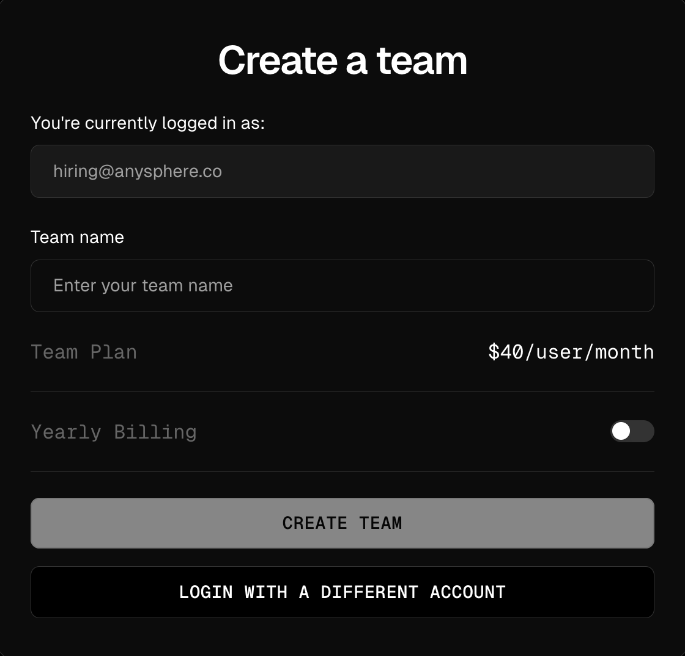Team metrics
How much your team are using Cursor?
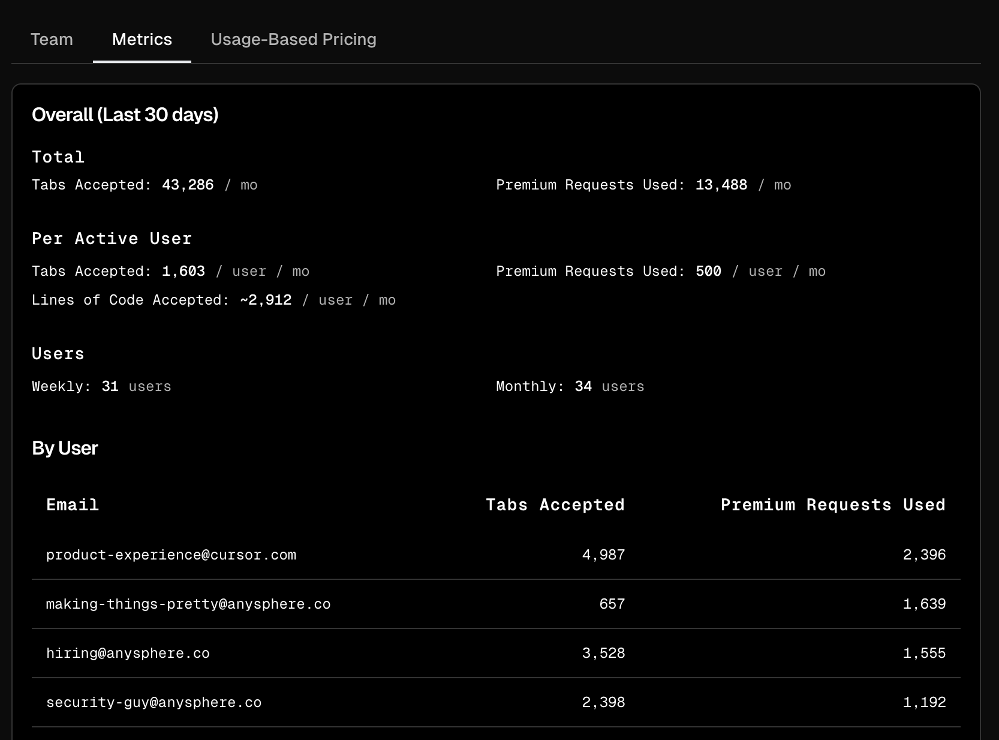Reviewing the IDE II
- Context features
- Developer features
Reviewing the IDE II
General idea about Cursor:
Reviewing the IDE II
- Context features
- Settings
- Models
- Cursor rules
- Modes (Agent, Ask, Manual)
- Symbols
- MCP Servers
Settings / Codebase Indexing
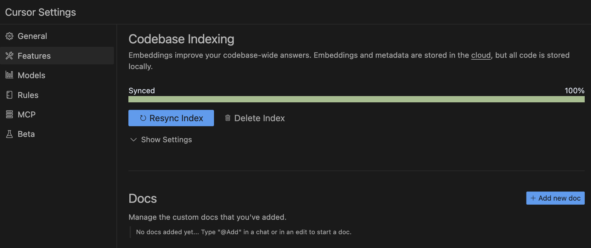Note: Review the usage of .cursorignore file to avoid indexing sensitive data.
Source: https://www.cursor.com/security#codebase-indexingSettings / Docs
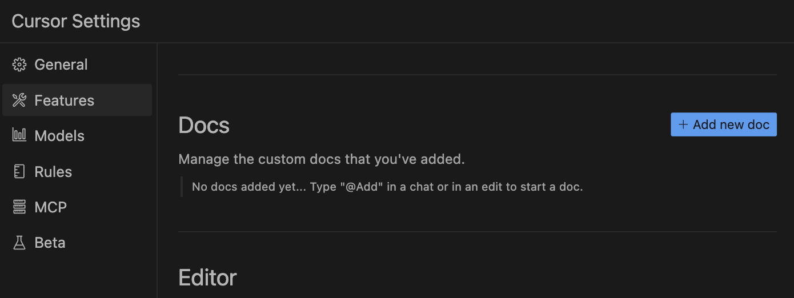Help cursor with the right documentation associated with your project/repository.
Source: https://docs.cursor.com/context/@-symbols/@-docs#docsModels
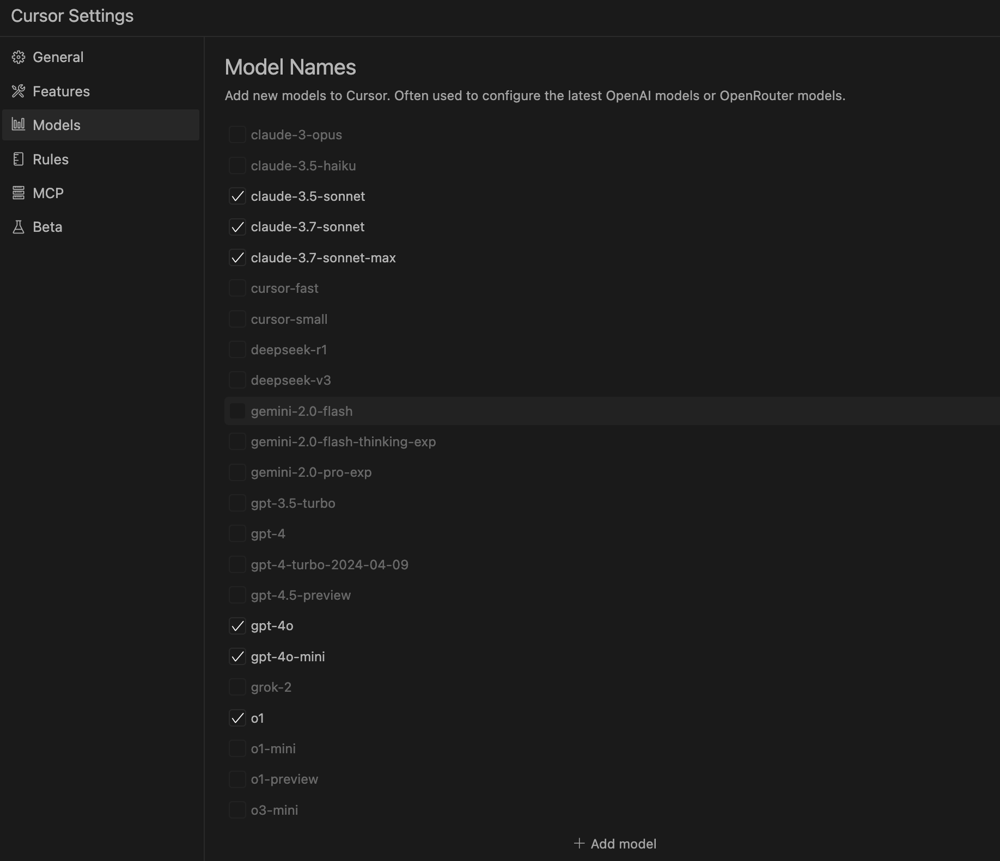 Source: https://docs.cursor.com/settings/modelsCursor rules
Using rules in Cursor you can control the behavior of the underlying model. You can think of it as instructions and/or a system prompt for LLMs.
Source: https://docs.cursor.com/context/rulesCursor rules
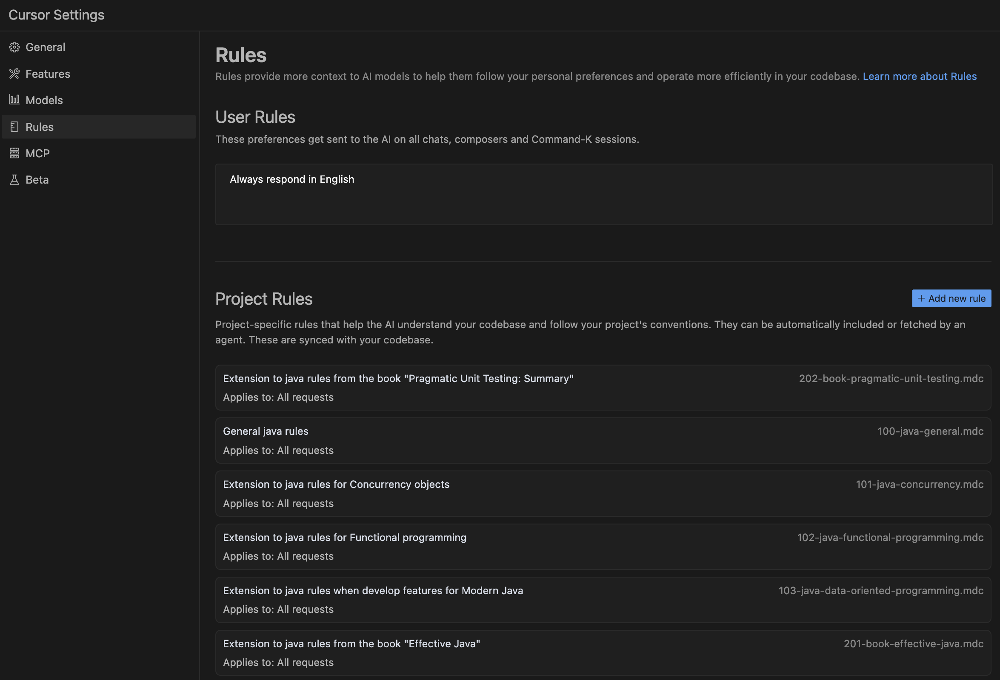Cursor rules
Analogy: In the organizations, exist specific expert roles with the title of IT Champions who define some guidelines for the usage of a specific Technology.
Cursor rules
| Rule Type | Description |
|---|---|
| Always | Always included in the model context |
| Auto Attached | Included when files matching a glob pattern are referenced |
| Agent Requested | Rule is available to the AI, which decides whether to include it. Must provide a description |
| Manual | Only included when explicitly mentioned using @ruleName |
Source: https://docs.cursor.com/context/rules
Cursor rules
Where I can find cursor rules?
Cursor rules
Where I can find specific cursor rules for Java?
How to apply them in my repository? $(pwd).cursor/rules
sdk install jbang
jbang cache clear
jbang catalog list jabrena
jbang setup@jabrena init --cursor java
Modes
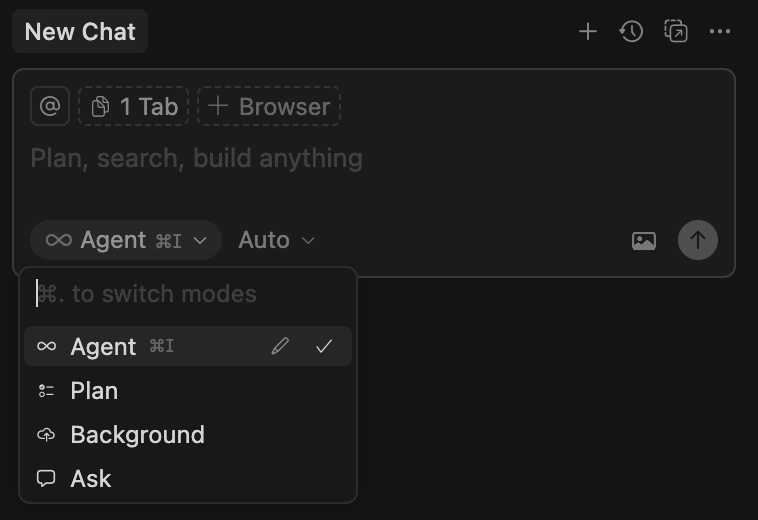Ask Mode
- Ask questions about specific code sections
- Get explanations of complex functions
- Find code patterns and examples
- Discover and understand your codebase
Ask Mode
Evolution to retrieve an answer about a doubt with your software.
| 1990 | 2000 | 2024+ |
|---|---|---|
| Book | ChatGTP, Cloude, Gemini... |
Agent Mode
- Make codebase-wide changes and refactoring
- Implement new features from requirements
- Debug complex issues across multiple files
- Generate tests and documentation
- Maintain consistency across your entire project
Agent Mode
Example:
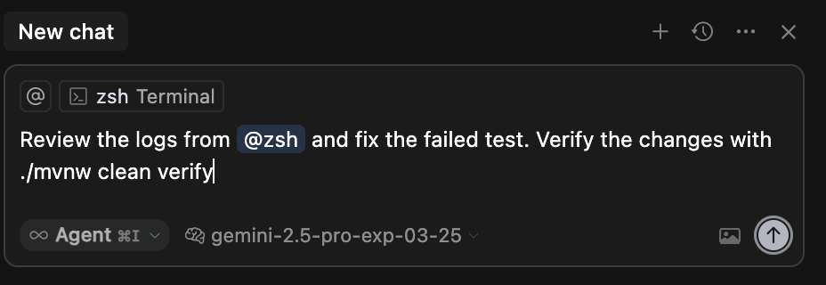Symbols
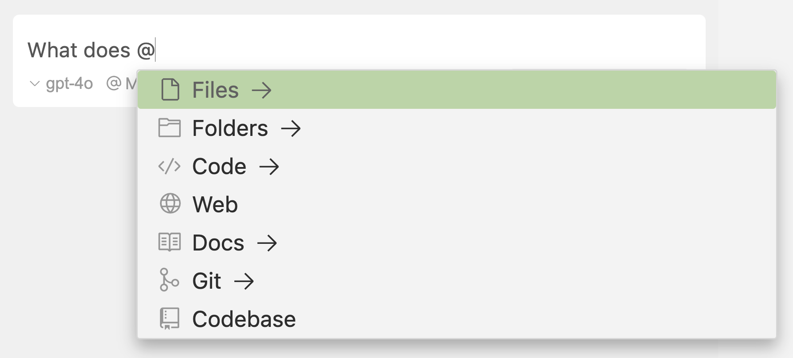 Source: https://docs.cursor.com/context/@-symbols/overviewMCP Severs
Model Context Protocol (MCP) is an open protocol that standardizes how applications provide context to LLMs.
Source: https://modelcontextprotocol.io/introductionMCP Severs
Think of MCP as a plugin system for Cursor:
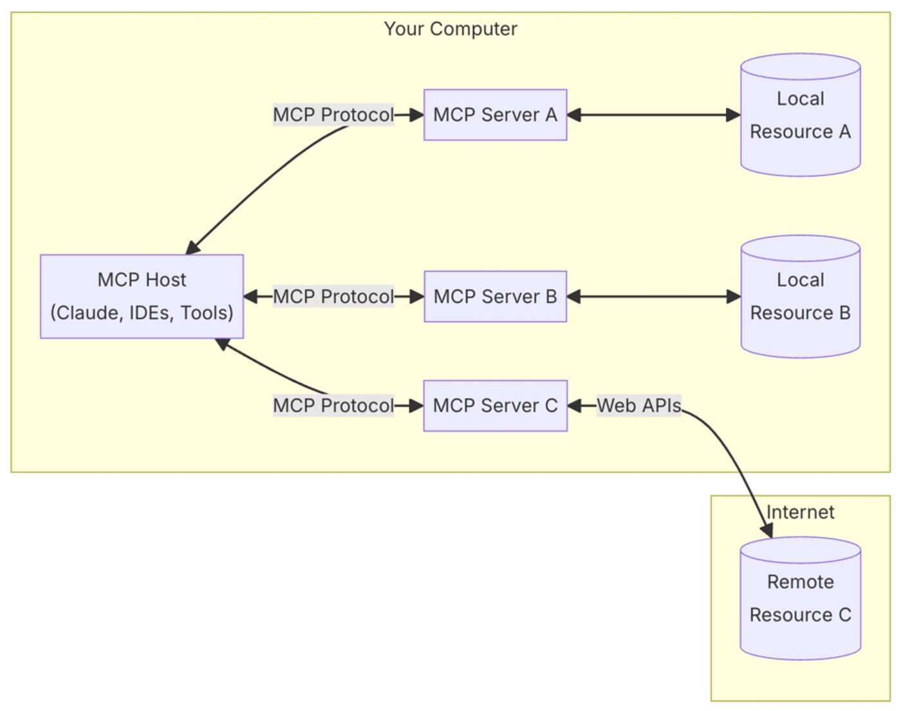 Source: https://docs.cursor.com/context/model-context-protocolMCP Severs
How to configure MCP:
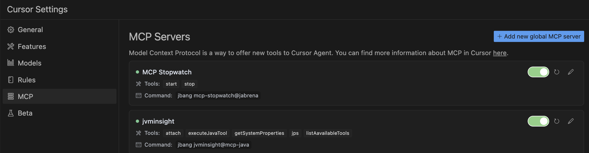MCP Severs
sdk install jbang
jbang cache clear
jbang catalog list jabrena
jbang cursor-mcp-config@jabrena --help
jbang cursor-mcp-config@jabrena --show
jbang cursor-mcp-config@jabrena --backup
jbang cursor-mcp-config@jabrena --replace examples/mcp0.json
jbang cursor-mcp-config@jabrena --replace examples/mcp1.json
MCP Severs
Where I can find useful MCP Servers?
MCP Severs
WIP Show stats about the MCP Servers
https://github.com/search?q=mcp-server&type=repositories&s=stars&o=desc&p=1MCP Severs
Where I can find useful MCP Servers in Java?
-
https://mcp-java.github.io/
- jvminsight
- Kubernetes
- containers
- filesystem
- jdbc
MCP Severs
- Verify the sources of your MCP servers
- Verify that you are using MCP servers closed releases
Reviewing the IDE II
- Developer features
- Tab model
- Review changes (Cursor PR)
- Velocity
Tab model
Review changes
Source: https://docs.cursor.com/chat/applyVelocity
Source: https://www.cursor.com/changelogDemo
- Detailed prompts
- Tasks management
Detailed prompts
Imagine that you need to build a New microservice from scratch:

 Source: https://datarob.com/essentials-software-development-life-cycle/
Source: https://datarob.com/essentials-software-development-life-cycle/Source: https://developers.redhat.com/blog/2016/12/09/spring-cloud-for-microservices-compared-to-kubernetes
Detailed prompts
In order to build it, you will have to review the architecture based on C4 Model:
docker run -it --rm -p 9000:8080 -v \
$(pwd)/structurizr:/usr/local/structurizr \
structurizr/onpremises:2024.12.07
open http://localhost:9000
Source: https://structurizr.com/
Detailed prompts
Requirements:
- UML Sequence Diagram about the system
- Gherkin scenarios
- Open API Specification for the new service
- Open API Specification for the third party service
- Database schema design
Detailed prompts
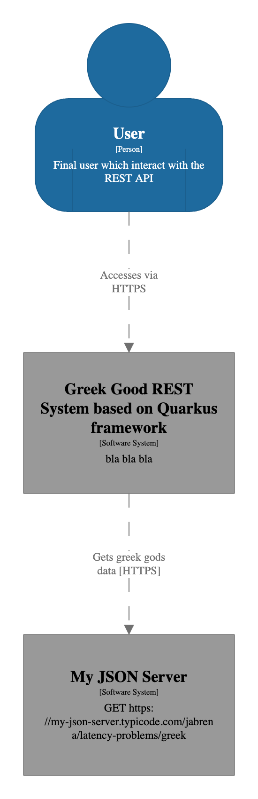Detailed prompts
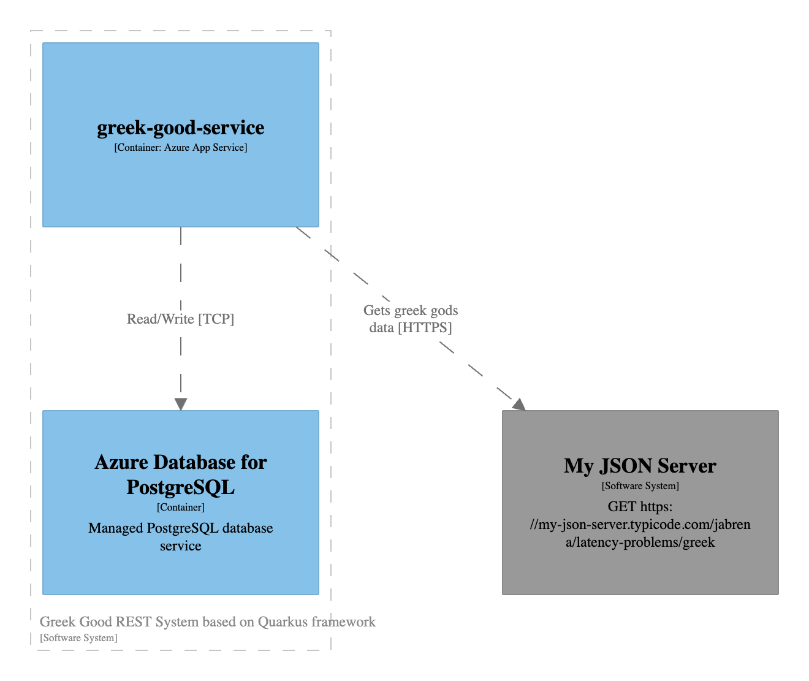Detailed prompts
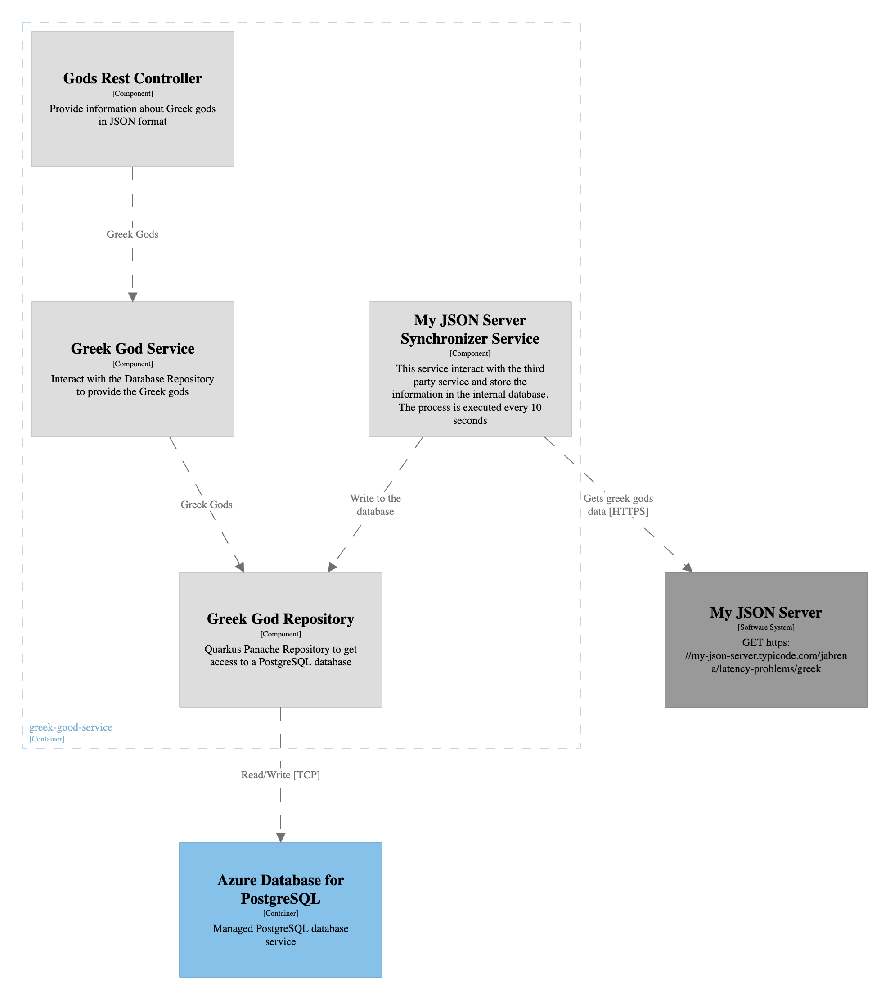Detailed prompts
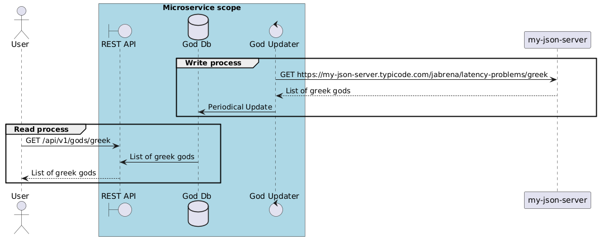Detailed prompts
reduce the ambiguity in prompts to increase the code quality generated and consume less tokens.
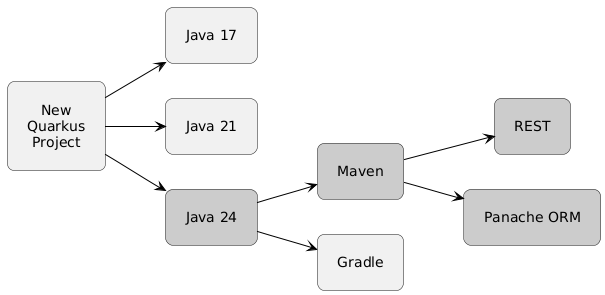Detailed prompts
Prompt: Use the @20250320-1.md as Prompt and analyze implement & test the following images to understand the required development.

Detailed prompts
Detailed prompts are fine, but exist executions where the LLM enter in loops.
How to interact and take more control for the process?
Tasks management
How to apply them in my repository? $(pwd).cursor/rules
sdk install jbang
jbang cache clear
jbang catalog list jabrena
jbang setup@jabrena init --cursor tasks
Many thanks to @EyalToledano, @elie2222 & @ryancarson for the ideas about Task management in Cursor.
Tasks management
Step 1: Create a Product Requirements Document (PRD)
Use the rule @1000-create-prd.mdc Here's the feature @20250428-1.md
Tasks management
Step 2: Create a Product Requirements Document (PRD)
Take @PRD-GREEK-GODS-SERVICE.md and create the tasks using the rule @1001-generate-tasks-from-prd.mdc
Tasks management
Step 3: Implement the different tasks
Start on 1.1 and use the rule @1002-task-list.mdc
Value proposition
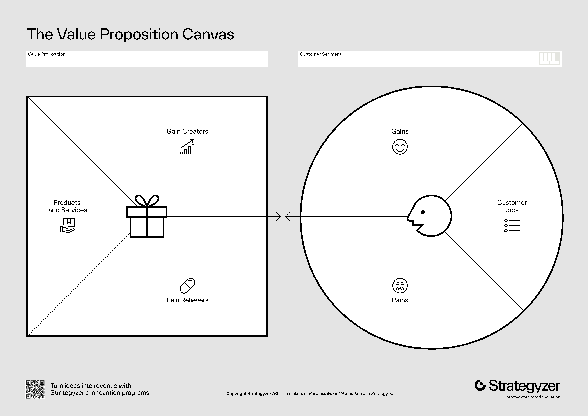 Source: https://www.strategyzer.com/library/the-value-proposition-canvasValue proposition
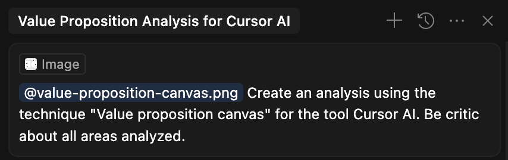Value proposition
The Circle (Right side) - Customer Profile:
- Customer Jobs:
- What customers are trying to get done
- Gains:
- The benefits/outcomes customers want to achieve
- Pains:
- The negative experiences, risks, and obstacles customers face
Value proposition
The Square (Left side) - Value Proposition Map:
- Products and Services:
- The items and services you offer
- Gain Creators:
- How your offering creates customer gains
- Pain Relievers:
- How your offering alleviates customer pains
Value proposition
- Customer Jobs: What customers are trying to get done (Software Engineer)
- Writing and maintaining code
- Debugging and troubleshooting
- Code review and documentation
- Learning new technologies
Value proposition
- Customer Jobs: What customers are trying to get done (Software Engineer)
- Critical Analysis:
- Not all development tasks benefit from AI
- Some tasks require human creativity
- Complex architectural decisions need human insights
- Critical Analysis:
Value proposition
- Gains: The benefits/outcomes customers want to achieve (Software Engineer)
- Faster development cycles
- Improved code consistency
- Better documentation practices
- Learning from AI suggestions
- Better tests
Value proposition
- Gains: The benefits/outcomes customers want to achieve (Managers)
- Faster development cycles
- Improved code consistency
- Better documentation practices
- Learning from AI suggestions
- Better tests
Value proposition
- Gains: The benefits/outcomes customers want to achieve (Software Engineer)
- Critical Concerns:
- May create false sense of productivity
- Could lead to over-reliance on AI
- Team dynamics might be affected
- Critical Concerns:
Value proposition
- Pains: The negative experiences, risks, and obstacles customers face (Software Engineer)
- Time spent on repetitive coding tasks
- Documentation burden
- Code maintenance challenges
-
Learning curve for new technologies
Value proposition
Dunning-Kruger effect
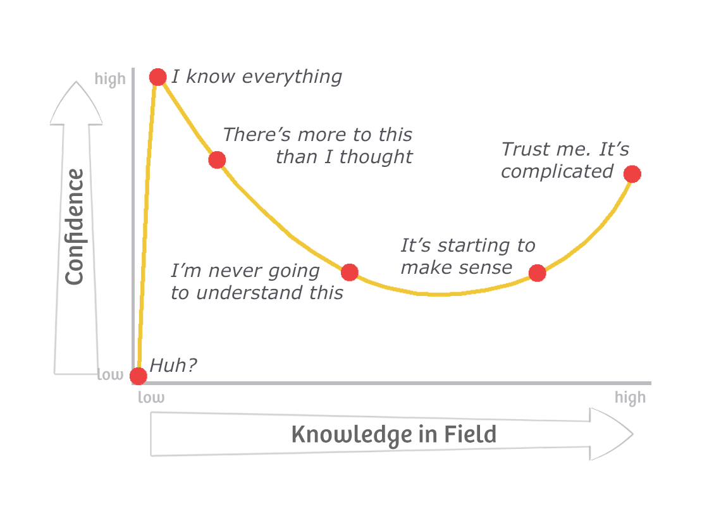 Source: https://agilecoffee.com/toolkit/dunning-kruger/Value proposition
- Pains: The negative experiences, risks, and obstacles customers face (Software Engineer)
- Critical Concerns:
- AI might not understand legacy code well
- Could introduce new types of errors
-
Security and privacy risks
- Critical Concerns:
Value proposition
- Products and Services: The items and services you offer (Cursor AI)
- Canvas AI as an AI-powered development tool
- Integrated development environment with AI capabilities
- Code completion and generation features
- Code analysis and refactoring capabilities
Value proposition
- Gain Creators: How your offering creates customer gains (Cursor AI)
- Increased developer productivity
- Faster code generation and completion
- Reduced time spent on repetitive tasks
- Better code quality through AI suggestions
- nhanced documentation capabilities
Value proposition
Let's review the impact of Cursor AI in Agile processes.
Value proposition
Cursor improve the build/code phase.
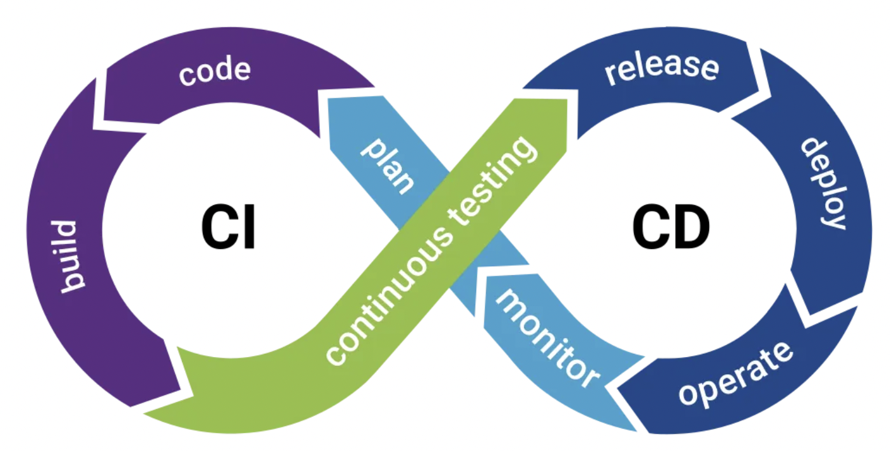Value proposition
But.. it is not the problem of Cursor if your Dev culture doesn't include: Pair programming, Collective Code Ownership, A wrong team size, others...
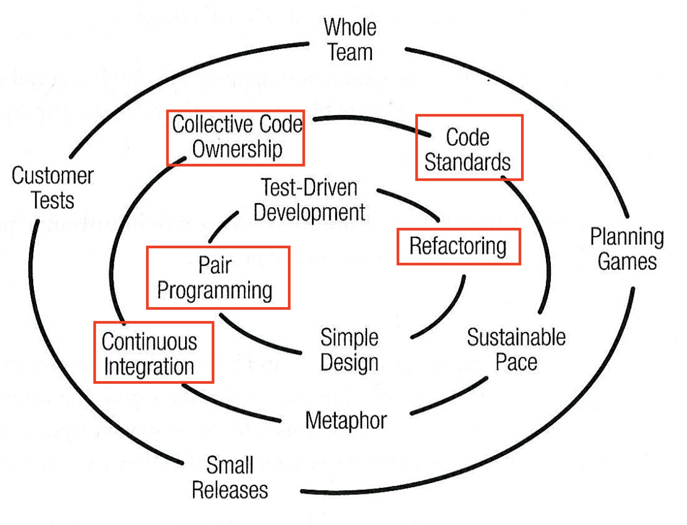Value proposition
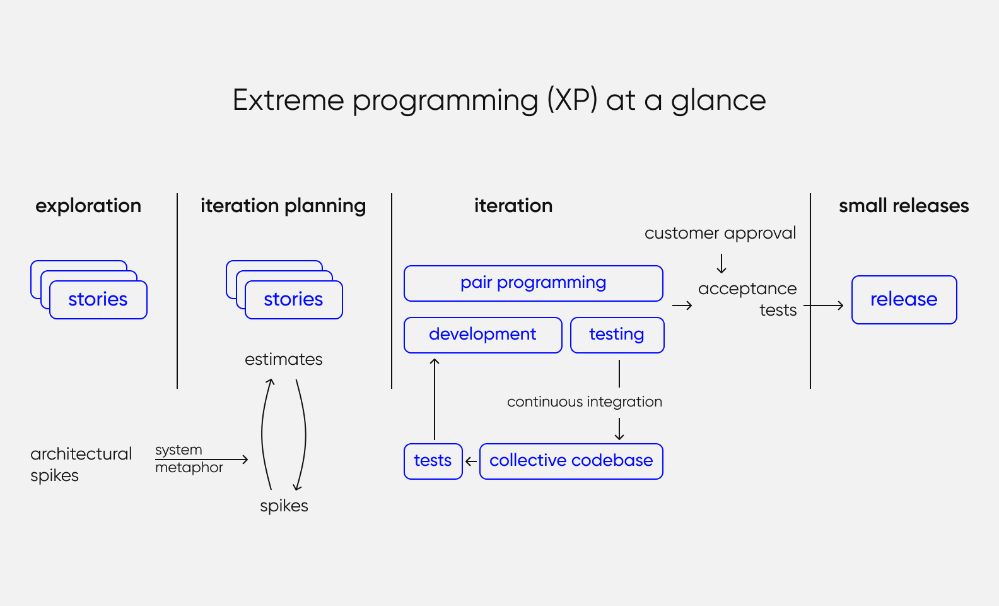Value proposition
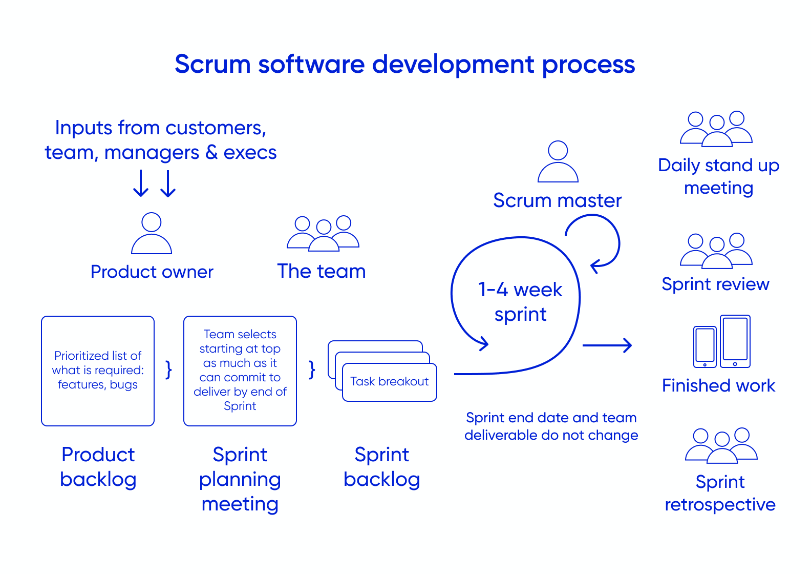Value proposition
- Gain Creators: How your offering creates customer gains (Cursor AI)
- Critical Concerns:
- May create dependency on AI suggestions
- Could lead to less deep understanding of code
- Quality of suggestions varies by context
- Critical Concerns:
Cognitive load
All lines of code generated by any LLM must to be mastered by the team.
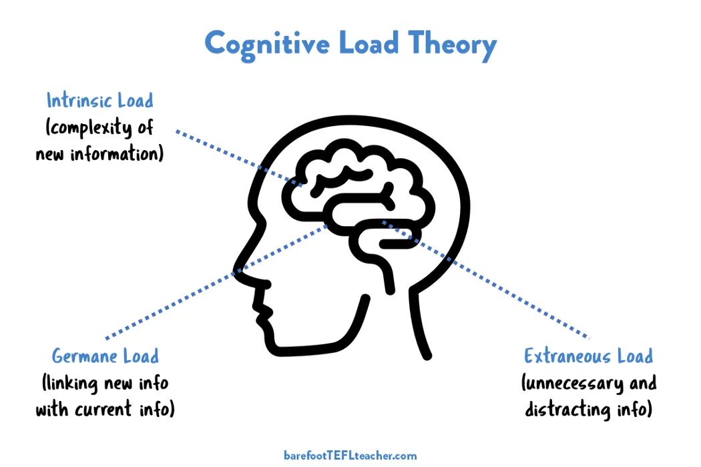 Source: https://www.barefootteflteacher.com/p/what-is-cognitive-load-theoryValue proposition
- Pain Relievers: How your offering alleviates customer pains (Cursor AI)
- Reduces manual coding effort
- Minimizes time spent on boilerplate code
- Helps catch potential bugs early
- Assists with code documentation
Value proposition
- Pain Relievers: How your offering alleviates customer pains (Cursor AI)
- Critical Concerns:
- May introduce incorrect or insecure code
- Could suggest outdated patterns
-
Privacy concerns with code sharing
- Critical Concerns:
References
Crossing the Chasm
 Source: https://www.amazon.com/Crossing-Chasm-3rd-Disruptive-Mainstream/dp/0062292986
Source: https://www.amazon.com/Crossing-Chasm-3rd-Disruptive-Mainstream/dp/0062292986
Effective Java
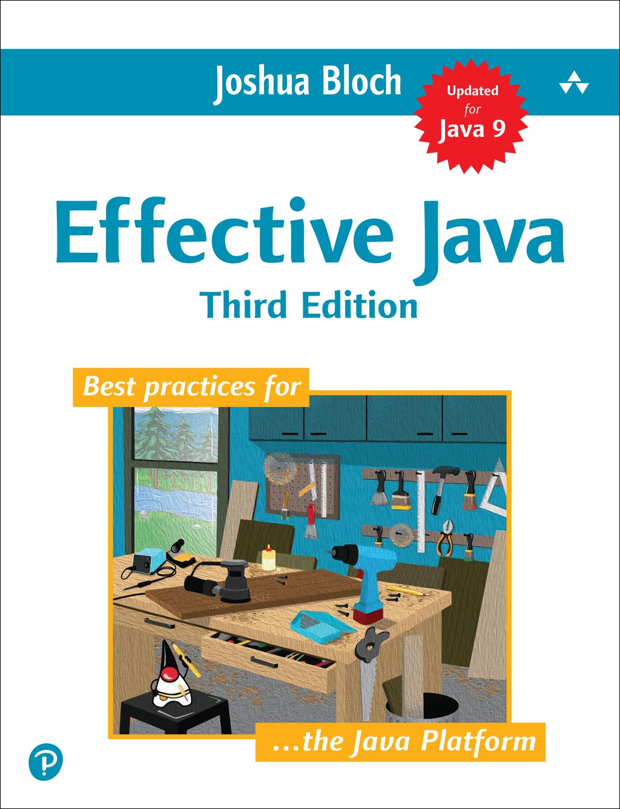 Source: https://www.oreilly.com/library/view/effective-java-3rd/9780134686097/Java Concurrency in Practice
Source: https://jcip.net/
Concurrenct programming in Java
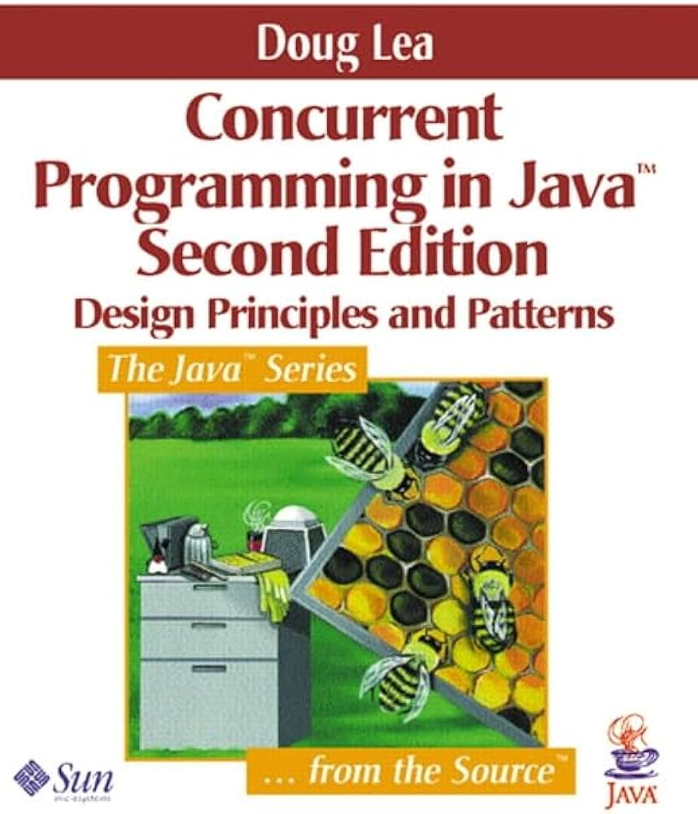Source: https://www.oreilly.com/library/view/concurrent-programming-in/0201310090/
Unit Testing
Source: https://pragprog.com/titles/utj2/pragmatic-unit-testing-in-java-8-with-junit/Fifty quick ideas to improve your tests
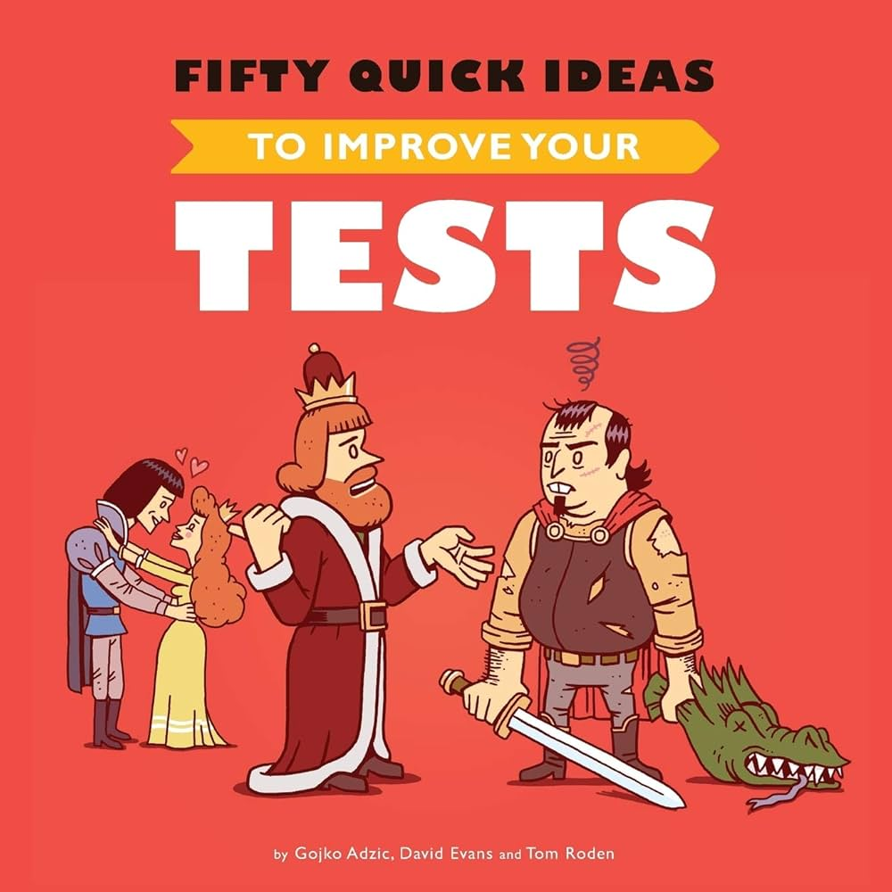 Source: https://fiftyquickideas.com/fifty-quick-ideas-to-improve-your-tests/Mockito made clear
Mockito Cookbook
Source: https://www.amazon.com/-/es/Marcin-Grzejszczak-ebook/dp/B00LA414IMInstant Mockito
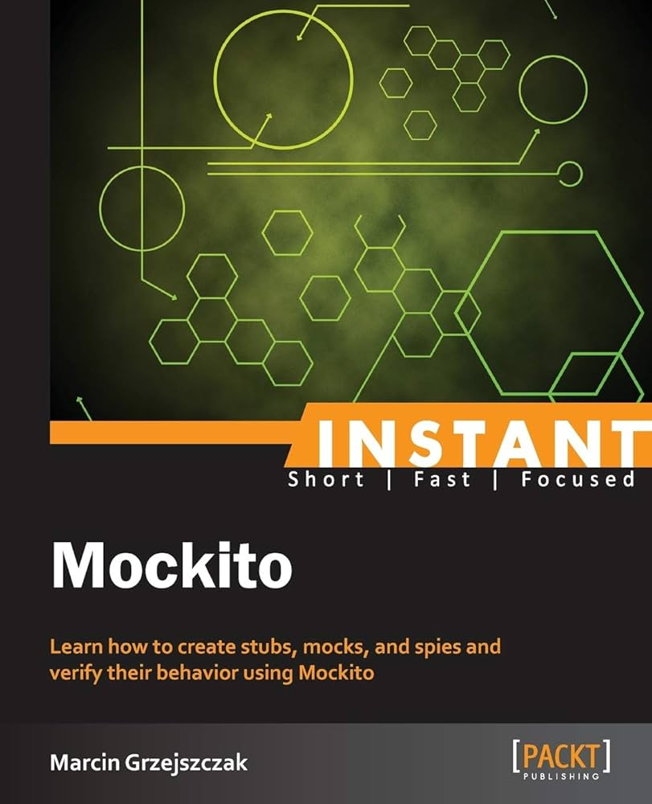 Source: https://www.amazon.com/Instant-Mockito-Marcin-Grzejszczak/dp/1782167978Unit Testing
Source: https://pragprog.com/titles/utj2/pragmatic-unit-testing-in-java-8-with-junit/Test Driven Development: By Example
Source: https://www.amazon.com/Test-Driven-Development-Kent-Beck/dp/0321146530Specification by Example
Source: https://gojko.net/books/specification-by-example/
Extreme Programming Explained
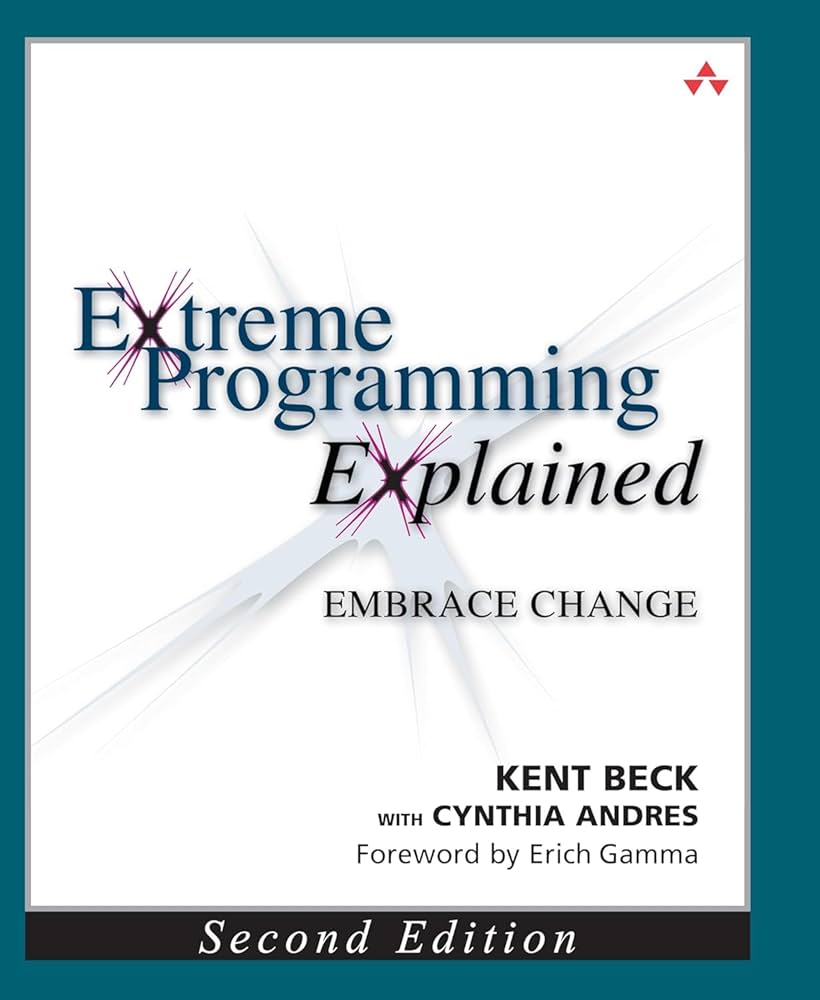Source: https://kentbeck.com/
New proposals...
Quarkus in action
Source: https://www.manning.com/books/quarkus-in-action
🙏 🙏 🙏
Thanks